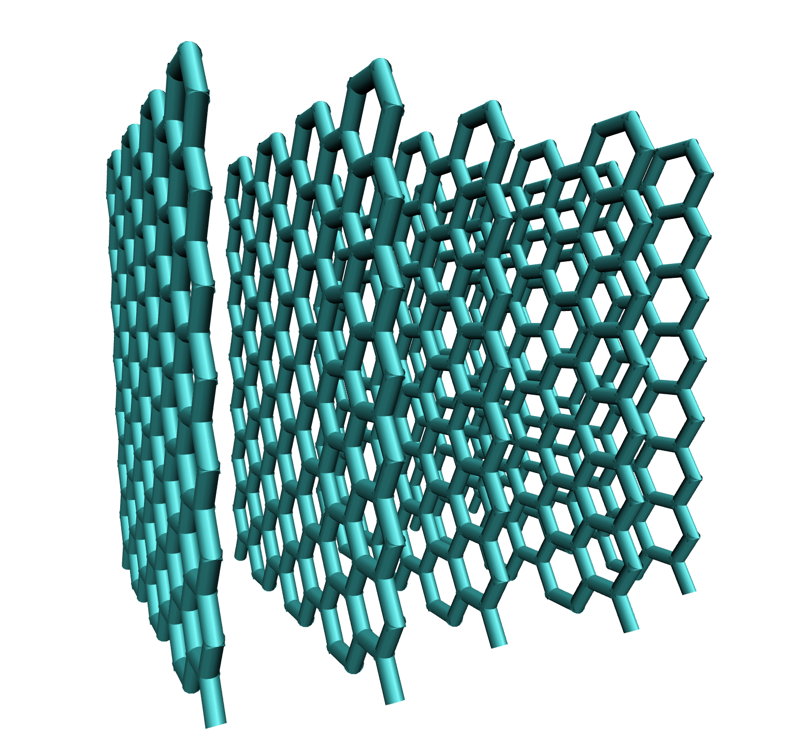
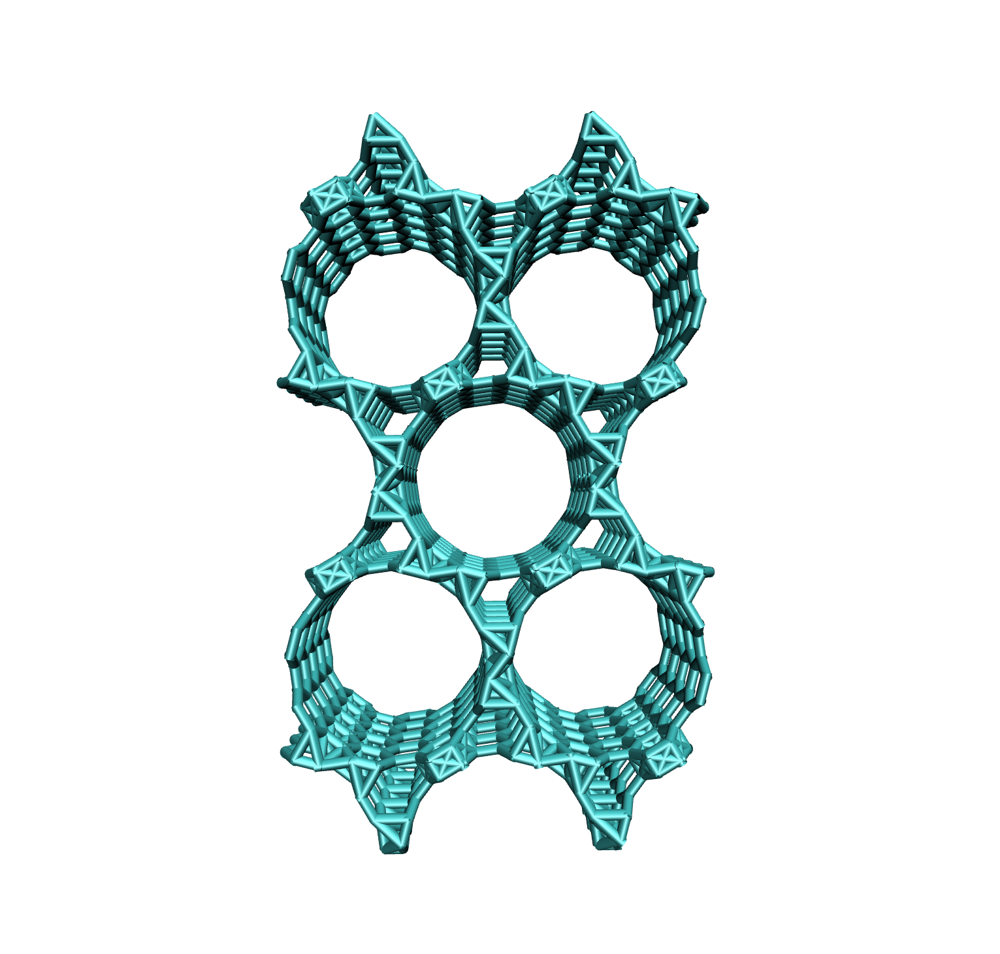

stack
The stack command is used to stack the current structure. The type of stacking depends on the current structure. Currently available structures:
graphene/boronnitride (creates a stack of sheets)
cnt (creates a periodic stack of parallel cnts)
pore (stacking not available)
depending on which structure is stacked, different arguments and commands for further customization are available:
graphene/boronnitride stackinginterlayer_spacing=
the interlayer_spacing arg sets the distance between adjacent sheets Angstrom. the arg requires one floating point value.
example: interlayer_spacing=5.0. The default for graphene is interlayer_spacing=3.35, the default for boronnitride interlayer_spacing=3.5.
graphene will have ABA stacking and boronnitride will have AA’ stacking.
number_of_layers=
the number_of_layers arg sets the number of sheets that the stack will contain. the arg requires one integer value.
example: number_of_layers=5.
example build:
CONAN-build: build type=graphene
CONAN-build: stack interlayer_spacing=5.0 number_of_layers=5
will yield the following structure:
{kind=link}
cnt stacking
cnt stacking will create a periodic boox of parallel cnts
multiplicity=
the multiplicity arg sets the number of unit cells in x and y directions. the arg requires two integer values.
example: multiplicity=2 3.
tube_distance=
the tube_distance arg sets the distance between parallel tubes in Angstrom. the arg requires one floating point value.
example: tube_distance=1.0.
example build:
CONAN-build: build type=cnt armchair tube_size=8 tube_length=10.0
CONAN-build: stack multiplcity=2 2 tube_distance=1.0
will yield the following structure:
{kind=link}